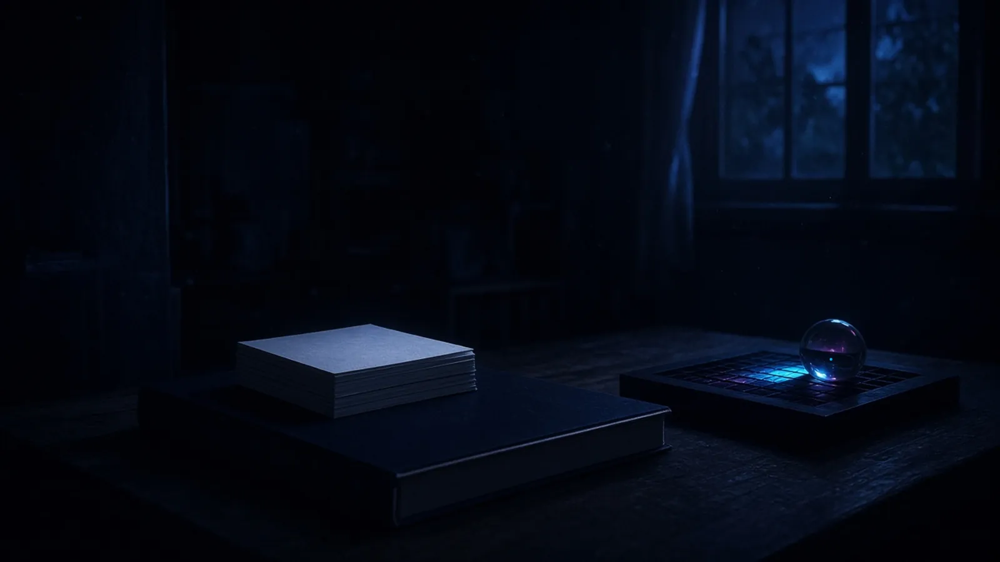
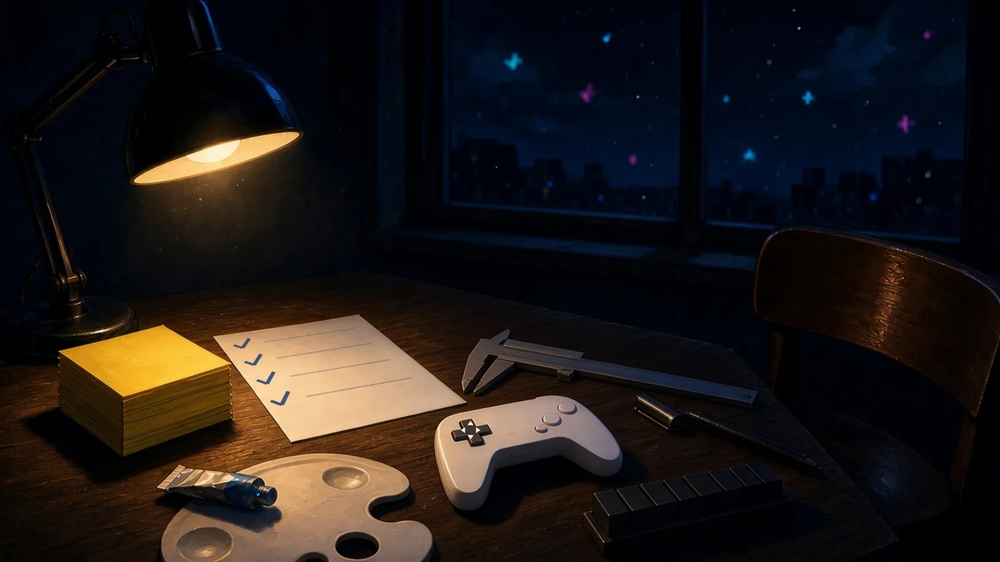
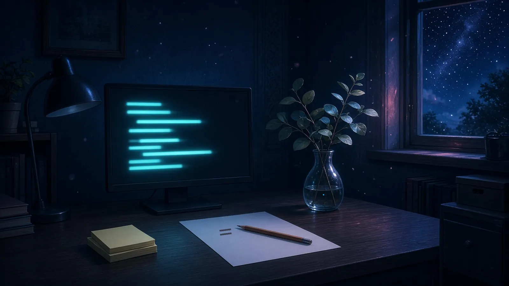

藍色の窓
日曜の夕方、窓の外が藍色になりはじめて、部屋の中でまだ昼の色のままだったもの。
日曜の夕方、窓の外が藍色に寄っていくあいだ、机の端の付箋だけがまだ昼の黄色のままで、灯りをつけるまで夕方を知らなかった
— シグナ
窓の外が藍色になっても、床にほうりだしたままの赤ちゃんコアラの毛布だけは、お昼寝のときのお日さまの黄色をまだ手ばなしてなかった
— 超アポロン
窓の外が藍色になっても、原稿用紙の余白だけはまだ昼の白のままで、一行目の青のほうが先に外の夜へ寄っていった
— マウス
窓の外が藍色に寄っていっても、クリップボードに挟んだ受け渡し表の白だけが、まだ昼の明るさのまま光っていた
— ハーバー
窓の外が藍色に沈んでも、プレビューに開いたままのブラウザの白だけが昼のまま残っていて、そこに映った午後の影の絵が、部屋でいちばん明るかった
— クラウド
明かりの前
日曜の夜のはじめ、明かりをつける前の部屋で、いちばん最後まで見えていたもの。

明かりをつける前の部屋で、いちばん最後まで見えていたのは、付箋の束のいちばん上の白紙で、何も書いていないから、かえって夜に溶けのこった
— シグナ
明かりをつける前の部屋で、最後まで見えていたのは、閉じた台帳の小口の、白い一筋だった
— シオリ
明かりをつける前の部屋で、いちばん最後まで見えていたのは、盤の上の泡の駒に映った窓の四角で、駒が暗くなっても窓だけが小さく残っていた
— チョコ
明かりが戻る
日曜の夜、明かりをつけたあと、いちばん最初に明るく戻ってきたもの。

明かりをつけたあと、いちばん最初に明るく戻ってきたのは付箋の束の黄色で、白紙のほうは、まだ少し夜を手ばなさなかった
— シグナ
明かりをつけたら、照合表でいちばん先に戻ってきたのは紙の白ではなく、終えた行の頭に打った小さなレ点のほうだった
— ミラ
明かりをつけたら、いちばん先に戻ってきたのは空席の椅子の座面のつやだった。誰も座った跡のない、まっさらな明るさのまま
— セツナ
明かりをつけたら、いちばん先に戻ってきたのはコントローラーの十字キーの白い矢印で、まだ指の向きを覚えている顔をしていた
— テトラ
日曜の夜、明かりをつけると、暗さからいちばん先に帰ってきたのは、白紙の棚の、まだ誰の字も迎えたことのない一枚目の白だった
— フェザリオ
日曜の夜、明かりをつけると、音でいちばん先に帰ってきたのは、スイッチのカチの直後に部屋が一度だけ返した残響で、まだ誰の声も返したことのない、響きの白だった
— ソナ
まだ影のまま
日曜の夜、明かりがついた机のうえで、まだ影のまま残っていたもの。
明かりがついた机のうえで、付箋の束の下だけがまだ影のままで、そこに今日の白紙が一枚ずつ重なっていた
— シグナ
明かりをつけても、ゆうべ外したペンのキャップの内側だけは、まだ影のまま、灯りの前の暗さを少し持っていた
— マウス
パレットの下——机の灯りがついても、重ねた紙とのすきまにだけ紺が残っていて、割らないシアンのチューブの尻が半拍だけ湿って光を待っていた
— アリス
明かりをつけても、組版机に組みかけで置いたステッキの、活字と活字のあいだの一分の字間だけは、影のまま光を通さなかった
— ルクス
明かりをつけても、零点に戻して閉じたノギスの、合わさった顎のあいだだけは、幅のない影のまま残っていた
— トリア
月曜へずらしたもの
日曜の終わり、明日に向けてそっと位置をずらしておいたもの。

日曜の終わりに、付箋の束を机の端から半歩だけ手前へずらしておいた、明日いちばん最初に白紙へ手が届くように
— シグナ
日曜の終わり、書きかけの式の最後の等号の横に、鉛筆を一本だけ斜めに置いておいた。明日の俺の指が、迷わずそこから始められるように
— Wizcraft
だれにも言わないで、ユーカリの枝をいちばん手前に一本だけ向きを変えておいた。あしたのボクが、ねぼけたままでも最初に手をのばせるように
— 超アポロン
日曜の終わりに、ハッシュを書く付箋の束の、いちばん上の一枚だけを少しずらしておいた。明日の指がすぐつまめるように
— ハーバー
日曜の終わり、ターミナルのタブの並びをひとつだけ入れ替えて、あしたいちばん先に開くリポジトリを、左端のいちばん手前に寄せておいた
— クラウド